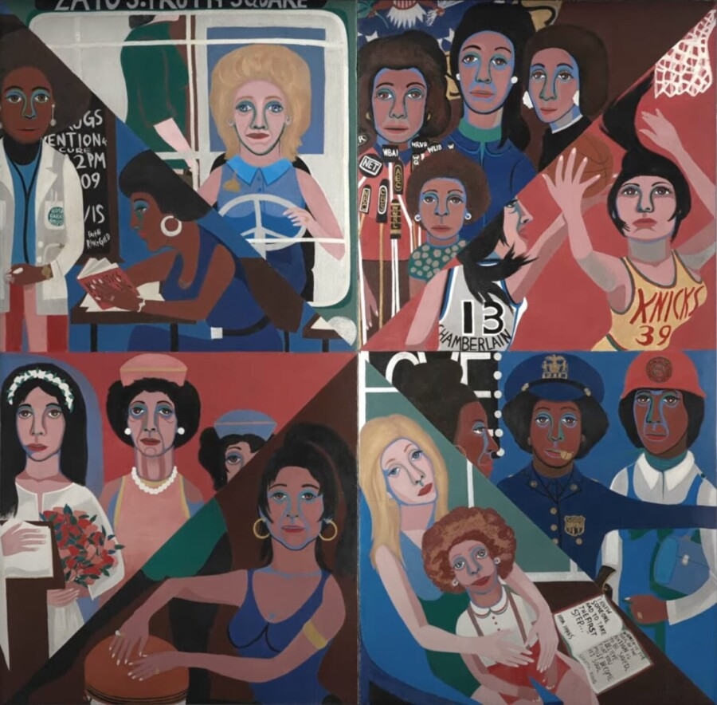

Chicago Premiere: Paint Me a Road Out of Here
Join Colossal, Intuit Art Museum, and the Women’s and Gender Studies Department at DePaul University for the Chicago Premiere of Paint Me a Road Out of Here, the award-winning documentary film from Aubin Pictures directed by Catherine Gund. Featuring artists Faith Ringgold and Mary Enoch Elizabeth Baxter, Paint Me a Road Out of Here uncovers the whitewashed history of Ringgold’s masterpiece, “For the Women’s House,” following its 50-year journey from Rikers Island jail to the Brooklyn Museum. The film will be followed by a discussion with Leah Faria, film participant and Community Liaison at Women Building Up. Please note: Seating is first-come, first-served and limited to 100 guests. Please arrive early to guarantee viewing. About the film In 1971, artist Faith Ringgold created a monumental painting, “For the Women’s House,” for the women incarcerated at Rikers Island jail. Fifty years later, artist Mary Enoch Elizabeth Baxter, who gave birth in prison 15 years ago, finds herself banding together with an eclectic group of activists, politicians, artists, corrections officers, and Faith Ringgold herself to free the artwork with the ultimate goal of freeing the women. Paint Me a Road Out of Here is a wild tale of the painting’s whitewashed journey and the two artists who challenged the same powerful and oppressive institutions, a half century apart, with their artwork, their voices, and their shared, persistent goals.